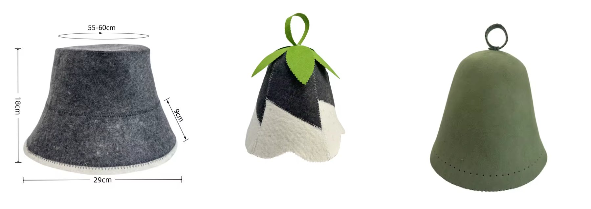

Spend enough time around saunas and you'll notice the regulars all wear funny felt hats. They're not a costume. A sauna hat is one of the cheapest upgrades you can make to your session.
Why wear a hat in the sauna?
Heat rises, so the hottest air in any sauna is up by the ceiling, right where your head is. That's especially true in a barrel sauna like ours: the curved roof keeps the heat close, and the wood stove can push the room to about 90°C. Your head often feels "done" before the rest of your body has warmed through.
Thick felted wool slows the heat reaching your scalp. Your head stays comfortable, so you can stay in for a full round instead of bailing early. It also spares your hair from the dry heat. Felt hats have been part of Finnish sauna and Russian banya culture for generations for exactly this reason.
Bucket, belltop or merino?

- Bucket hat. A brimmed shape that shades your eyes and ears and is easy to pull on and off between rounds. The everyday pick. Fits roughly 55–60 cm.
- Belltop. The traditional banya shape. Deep coverage over your ears, with a loop to hang it by the sauna door.
- Merino. Softer, finer wool, seamless and comfortable. The one for people who sauna every week, and a good gift.
All three do the same job. Pick the one you'll actually wear.
How to use one
- Dip it in cold water and wring it out before you go in, if you like. The damp wool gives a bit of extra cooling for the first few minutes. A dry hat works fine too.
- Wear it loose, pulled down over your ears.
- Take it off for the cold plunge, then put it back on for the next round.
Looking after it
- Rinse it in cool water after a session and hang it to dry.
- Hand wash now and then with a mild wool soap. Press the water out; don't wring or twist it.
- Reshape it while damp and let it air dry, away from the stove.
- Skip the dryer and hot water. Felted wool shrinks.
Where to get one
Sauna Hats Canada ships wool and merino sauna hats across Canada from Squamish. Right now they're giving away the grey wool bucket hat for Christmas: the hat is free and you pay $19.99 shipping. Join their list and they'll email you a code in December (details).
Running a sauna, spa or studio? They also do custom embroidered hats with your logo. And for the full deep-dive on styles and sizing, see the sauna hat guide.
Booking a Mamquam Sauna session? You can add a sauna hat to your booking for $5, so it's waiting for you when the sauna arrives.
Put it to use
The best place to break in a new hat is a real wood-fired sauna. Mamquam Sauna delivers the original Squamish secret sauna, restored, to your place in Squamish, Whistler or Pemberton for a private 24-hour session, with a cold plunge and firewood included.
How booking works
Hit Book Now, pick your dates and any add-ons, and send a request. Nothing is charged to send it, and you can include questions. Your dates are held for 48 hours while Glenn reviews the request. Once it's approved you'll get an email link to pay a $100 deposit, which confirms the booking. The balance is sent as a payment link three days before your session.
More reading: The Secret Saunas of Squamish: Where They Went & Where to Sauna Now · Squamish sauna guide